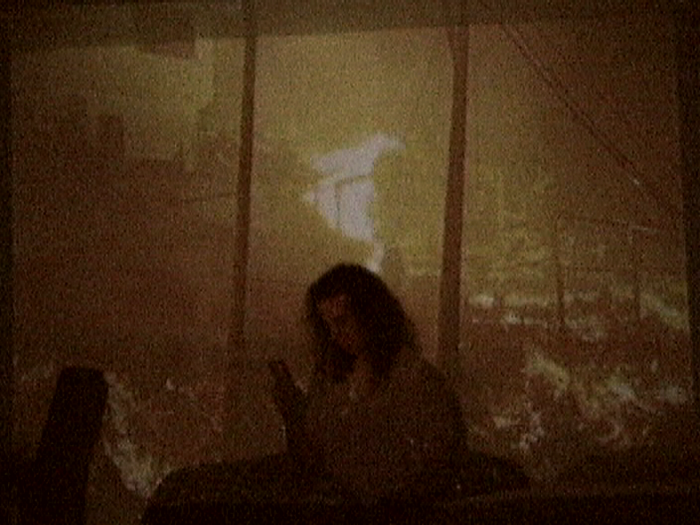
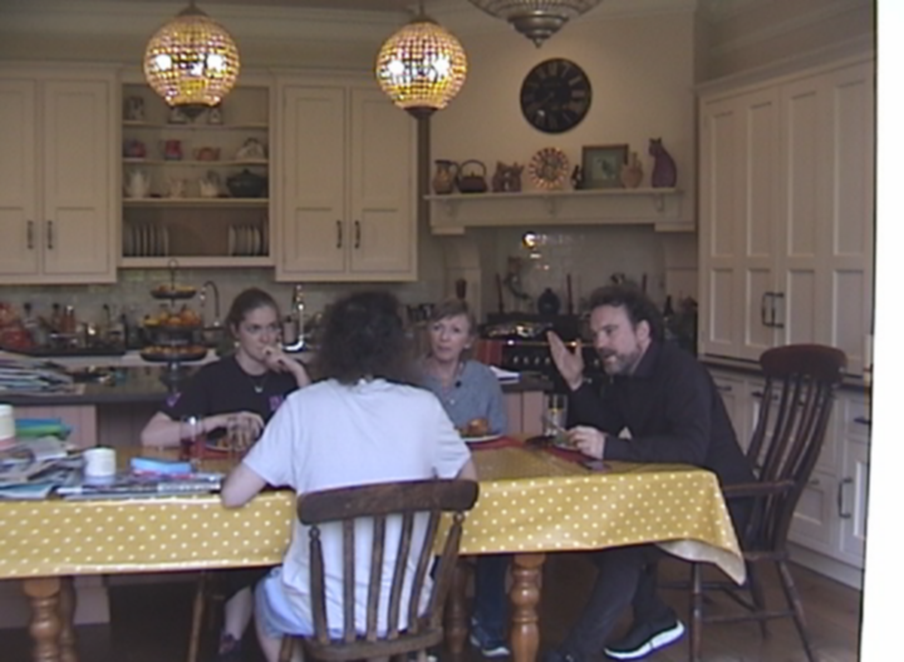
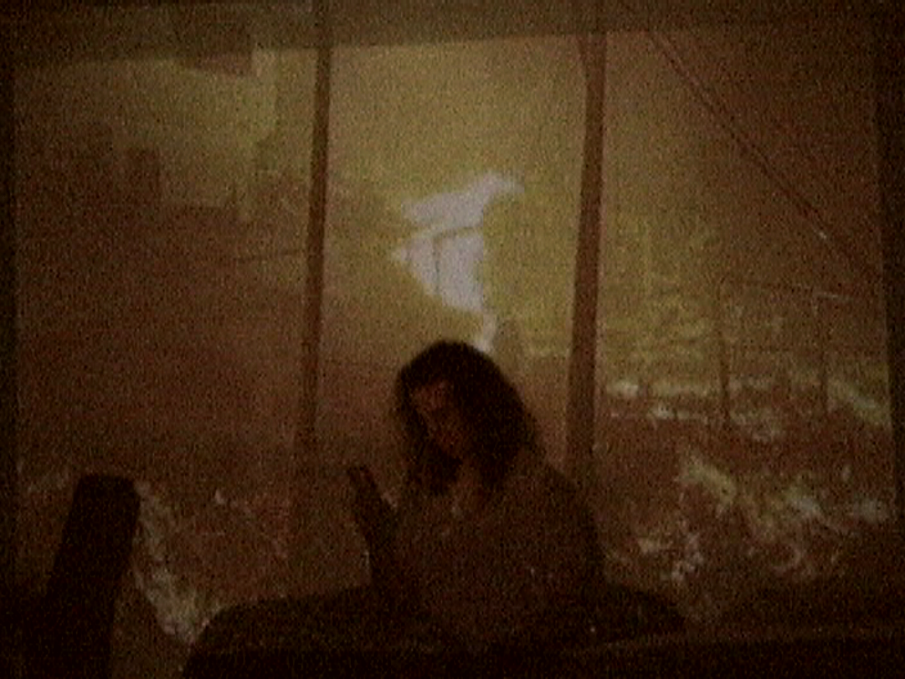
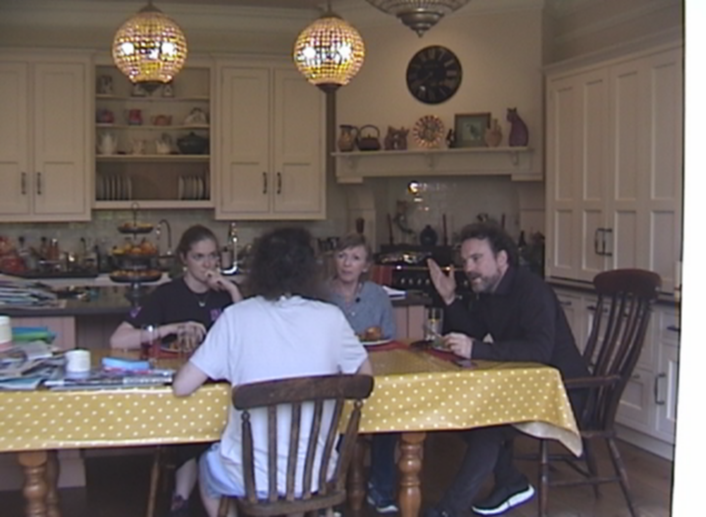

Work
The Ice Lolly King — feature
A 97 minute coming of age Comedy Drama Mumblecore adjacent film shot on a Digital8 camcorder that explores nostalgia, apathy, Privilege, neurodiversity and gender. The narrative follows a young college dropout who has spent his whole life training as a hockey player, only to realize that it wasn’t for him. He has a week left before moving back in with his strict parents. This feature film was filmed with a shoestring budget but achieves a quality of narrative that rivals most high regarded independent films. The film was shot by the notable Cinematographer Nicole Atalla (All That Glitters, Somewhere Else for Netflix). The film was also composed by the notable internet composer Zoë Blade (Contrapoints, HbomberGuy). The film is set to release in festivals this year.
Role: Writer/Director/Producer/Editor and Actor • Year: 2026 • Runtime: 97 mins long


 


